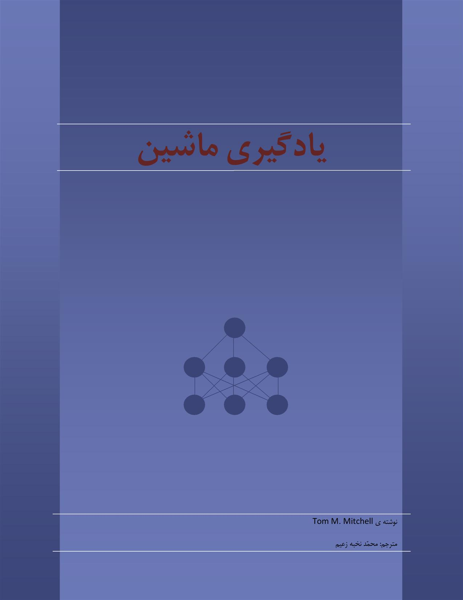
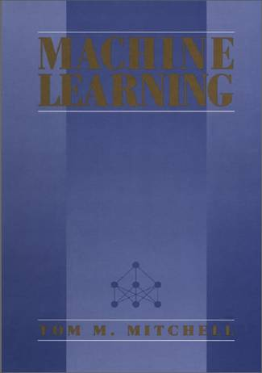

کتابی که پیش روی شماست نسخه ی آزمایشی ترجمه یادگیری ماشین اثر T.M. Mitchell است. لطفا جز برای استفاده شخصی و تحقیقاتی از آن استفاده نکنید.
|  |  |
فصول آزمایشی شامل قسمتهایی با علامات - است که به معنای حذف چند کلمه تا چندین پاراگراف است.
فصل اول: مقدمه ای بر یاددهی به ماشین
فصل دوم: یادگیری مفهوم و ترتیب کل به جزء
فصل سوم: یادگیری درخت تصمیم گیری
فصل چهارم: شبکه های عصبی مصنوعی
فصل هفتم : یادگیری محاسباتی (نسخه آزمایشی)
فصل هشتم: یادگیری مبتنی بر نمونه ها
فصل دهم: یادگیری دسته قوانین (نسخه آزمایشی)
فصل یازدهم: یادگیری تحلیلی (نسخه آزمایشی)
فصل دوازدهم: تركیب یادگیری تحلیلی و استقرایی (نسخه آزمایشی)
اخبار:
25 آبان 91– ایجاد صفحه و ارائه ی اولین نسخه
1 آذر 91– تصحیح غلطهای املایی اولیه
مهر 92- تغییر آدرس صفحه
فروردین 93- اعمال اولین تغییرات ویرایشی و ارائه نسخه ی 0.1. با تشکر از مهسا دهداشتی، سید مجید خراشادیزاده و عباس رزاق پناه که در غلط یابی کمک کردند.